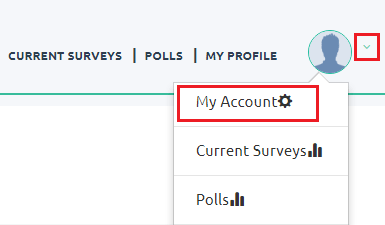

Paid surveys


 Click on the images for more information.
Click on the images for more information.Terms and Conditions
Below, we explain those that in our opinion are the most significant of the 16 points that are stated in the terms and conditions of Opinion Bureau, we ask you to read them with special attention so that you avoid inconveniences that may affect your progress in this web.


-
3.
Opinion Bureau reserves the right to consider your eligibility to participate in each of your surveys:
This indicates that Opinion Bureau allows the right to decide whether or not we're able to respond to each of the surveys, according to our profile and the answers we've given in different surveys.5.
At any stage, if you find that you've created multiple accounts with Opinion Bureau using different email addresses, all your accounts will be blocked and the amount won on each of the accounts:
This point is very important, because if Opinion Bureau detects that you've created more than one account with the same IP address, all will be blocked and the same will happen with the profits that you've obtained in them.7.
Participants are asked not to give wrong or falsified answers in a survey. All answers must be truthful and honest:
It is important to respond according to the information that we recorded in our profile, it is usual that in the surveys some questions appear two or more times, this in order to verify if we're answering each question in the same way, if you answer the same question in a way different, your participation in the survey will end and you'll not receive the reward for having responded.8.
You'll never try to take a survey several times. If we find that you're trying to participate in the same survey on multiple occasions, your membership will be terminated by our team:
Never try to answer a survey several times, for example, by opening it in your browser in several tabs, can be seen as a faster way to increase your earnings, but what will happen is exactly the opposite, your membership will be canceled, ie your account will be eliminated and your profits equally.10.
You'll never use any autolenado technique for creating the account or answering survey questions such as robots or any other software or trying to send any virus through the site:
Similar to point 8, with the difference that it doesn't cover trying to answer a survey several times, but to do it with robots besides trying to send viruses through the web, all this involves the elimination of your account and your profits.If you've any doubts about the conditions of use of Opinion Bureau, remember that you can visit the section
and we'll do our best to clarify all doubts you've about this and all the pages on this site.
How to access the surveys?
To access the surveys there are two ways, the first is with a notification that reaches the email you registered on your profile, in that email, you'll get a link that will take you to the survey and the second form is from the page Opinion Bureau, at the top, as you see in the following capture:
When you enter, you'll find the surveys that are available to respond, in our case, the first time we entered we appeared the following:

Recommendations
Complete your profile
, we recommend that it be the first things you do after registering with Opinion Bureau, this will make it easier for you to be able to get the most surveys that come to you, to complete your profile information, click on the option

There are five categories that you should complete as much as possible to increase the probability of being able to respond to the surveys that come to you, it is worth noting that you may not be able to complete all the categories at 100%, since being able to answer some questions depends on the answers you've given to one or more previous questions.

Be patient if you can't answer some surveys
, you'll realize that you're not able to respond to all surveys, we don't want to lie telling you that you can answer them all, because we know that it is not, not all profiles are eligible to respond to a survey, yes, we recommend you enter to all that appear to you, as some won't be able to answer them, in others you'll be able and yes you'll be able to do it.
Provides consistent information
, trying to remember the information you provide since in a survey you can get two or more times the same question, this in order to verify if the answer to this question is always the same, if not, you'll not be able to finish answering the survey and you'll not receive the respective payment.
Look out for email notifications
, or failing that, we recommend that you constantly review the surveys available on the Opinion Bureau website, since surveys disappear when the required number of respondents is reached, so there is no fixed time during which the survey will be available.
Regarding payment

To view your balance in Opinion Bureau you must, once you're logged in, click on your profile picture or the option sign on the right, then select the option

As you can see, on the right you can see the amount you've accumulated so far, we must clarify that this capture was taken at the time of registration, for that reason we only have the initial 6 USD of which we've already talked to you.
Turning to the important aspects about the payment, the minimum amount to request the withdrawal are 10 USD or its equivalent in different currencies.
If you've already won the 10 USD and you want to withdraw your winnings, you should agree to the option

You'll find yourself with this module in which tells you the earnings you've accumulated and the amount you've available to withdraw. We must clarify that not everything you get is made withdrawable, for example, what you earn with a survey is withdrawable 45 days after you've answered the survey.

Once you've at least 10 USD in the withdrawable amount, to start the withdrawal process, click on the button
Days later, an email will arrive to confirm that you've requested the withdrawal, you'll have to re-select the method of payment, if you've chosen PayPal, you'll be asked to enter your information from your PayPal account.
When you finish entering your PayPal account details and confirm them, you've already completed the withdrawal process, you only have to wait 2 to 4 days while the transaction is complete.
Referral system
In Opinion Bureau you can also increase your profits through the referral system, which you can access from the main menu, in the option


The referral system is very simple, for each of your friends to register on the platform and respond to the initial survey, for which your friend will earn 6 USD, you'll receive 1 USD, regardless of whether your friend is still answering surveys or not , you'll receive that initial dollar.
Frequent questions
If my country isn't available, can I use VPN?
We don't recommend it since applications that provide IP connections from different countries can assign the same IP address to your account and that of others, which, if detected by Opinion Bureau, it could cause the deletion of your account and you would lose the profits that you've obtained, but remember that if you want to use some VPN service is your responsibility and you risk to be sanctioned.
How often can I make a retreat?
Whenever you want, as long as you've at least 10 USD to withdraw, remember that between the time you request withdrawal and that your money reaches PayPal or any other method of payment, you can go from 5 to 20 days, in which you can't request a retreat.
Is the payment only in USD?
The currency with which the payment is made depends on your country, for example, if you're from Spain, the payment will be in euros, but if you're from the United States, it'll be in USD.
How long does it take to withdraw the winnings?
Once you request the withdrawal and the confirmation email arrives, it can take from 1 to 15 days and once you confirm your PayPal data, it may take 2 to 4 days for the money to appear in your PayPal account, so in total the time between you request the withdrawal and that the money arrives can vary between 1 and 20 days.
How many polls a day?
From our experience, we can tell you that some days arrive between 1 and 3 surveys per day, although sometimes none come during the whole day, so we recommend that you enter frequently to access as many surveys possible.
I don't have PayPal account
No problem, the first thing you've to do is go to the PayPal page, we don't provide the link for your own security, once there, at the top you'll find the following options:

Here, after clicking on

Later you will be asked your gender and tastes and then your personal data and finally, they will ask you if you want to associate your bank card, being able to postponed if you want to do so by clicking on
Spanish
English
French
German
Portuguese
Latvian
Dutch
Italian
Danish